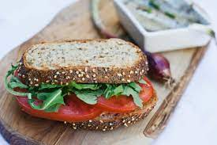

This recipe goes back generations, passed down from my kitties that love to eat my bread as I prepare my sandwiches!
These are the ingredients that are needed to make the perfect sandwich that is kitty approved: